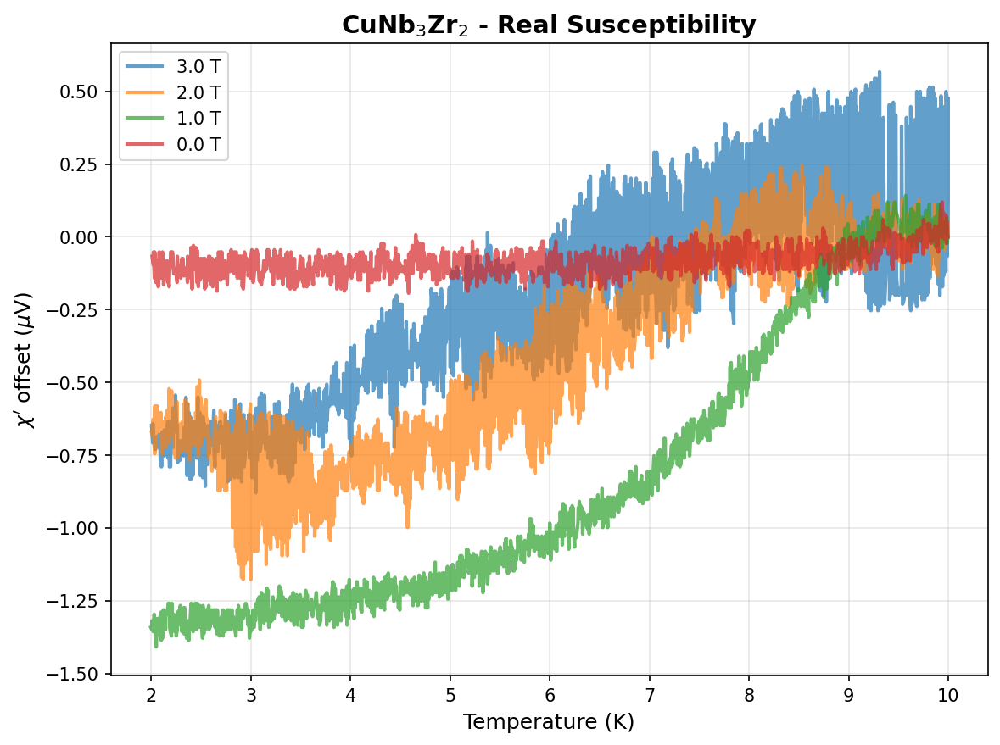
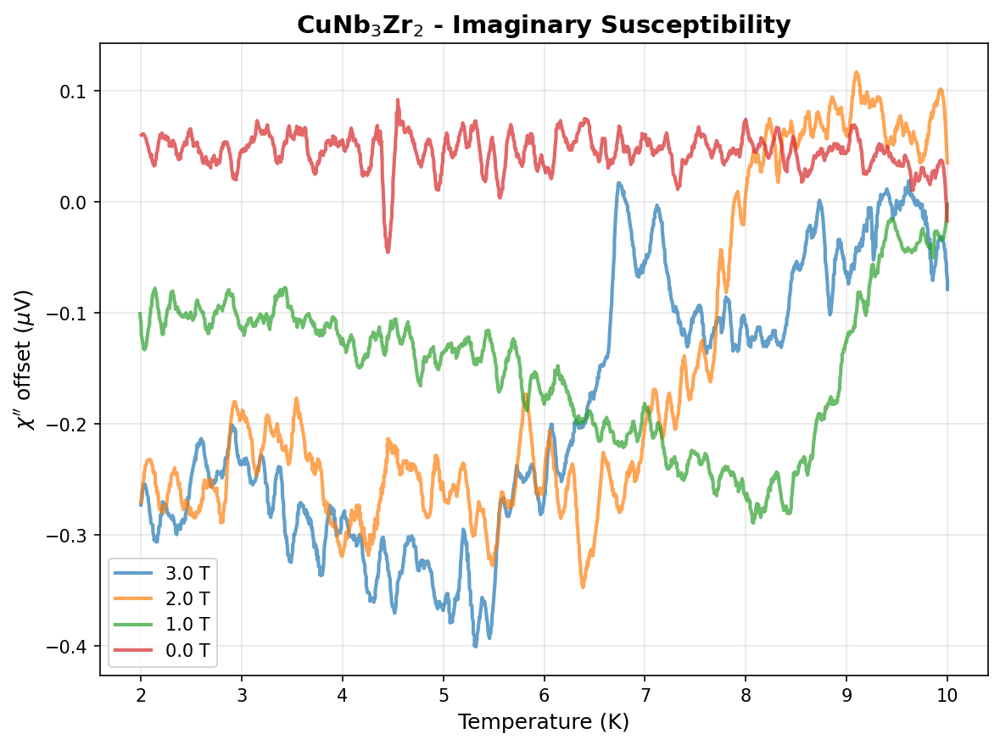
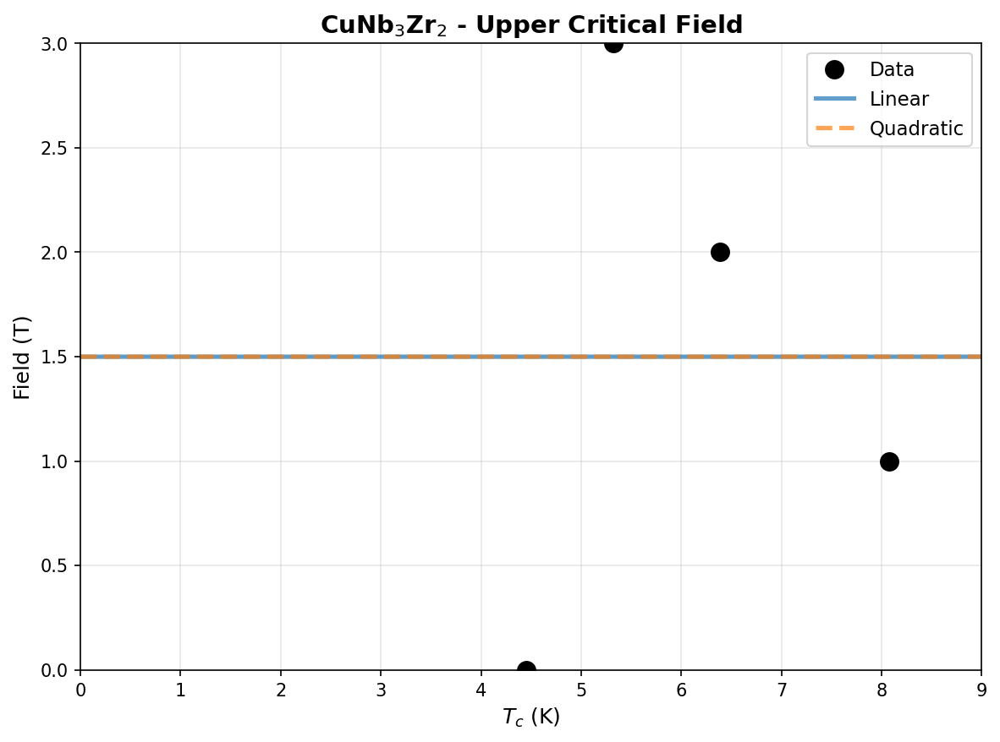

| Element | Expected (mol frac) | Measured (mol frac) | Δ (mol frac) | Δ (%) |
|---|---|---|---|---|
| Cu | 0.1667 | 0.1655 | -0.0012 | -0.12% |
| Nb | 0.5000 | 0.5010 | +0.0010 | +0.10% |
| Zr | 0.3333 | 0.3336 | +0.0002 | +0.02% |
434 entries in the Cu-Nb-Zr element system (12 on hull, 40 ICSD-tagged). Stability in meV/atom. Sorted most stable first.
| Composition | Stability (meV/atom) | ΔE (meV/atom) | ICSD | Space | Entry | CIF |
|---|---|---|---|---|---|---|
Cu1Zr2 |
-47 | -137.6 | Cu-Zr | 1895393 | CIF | |
Cu7Zr2 |
-10 | -151.3 | Cu-Zr | 1799155 | CIF | |
Cu8Zr3 |
-10 | -163.4 | ✓ | Cu-Zr | 2052365 | CIF |
Cu10Zr7 |
-5 | -159.8 | ✓ | Cu-Zr | 20874 | CIF |
Cu5Zr1 |
-4 | -117.2 | ✓ | Cu-Zr | 17177 | CIF |
Cu1 |
+0 | 0.0 | Cu | 2072241 | CIF | |
Cu1 |
+0 | 0.0 | Cu | 2066481 | CIF | |
Cu1 |
+0 | 0.0 | ✓ | Cu | 635950 | CIF |
Nb1 |
+0 | 0.0 | Nb | 1521870 | CIF | |
Nb1 |
+0 | 0.0 | Nb | 1215170 | CIF | |
Nb1 |
+0 | 0.0 | Nb | 1521875 | CIF | |
Zr1 |
+0 | -0.2 | Zr | 1791927 | CIF | |
Nb1 |
+0 | 0.0 | ✓ | Nb | 685533 | CIF |
Cu1 |
+0 | 0.1 | Cu | 2066479 | CIF | |
Nb1 |
+0 | 0.1 | Nb | 2162724 | CIF | |
Nb1 |
+0 | 0.1 | Nb | 2162619 | CIF | |
Zr1 |
+0 | 0.0 | ✓ | Zr | 67408 | CIF |
Zr1 |
+0 | 0.1 | Zr | 758445 | CIF | |
Zr1 |
+0 | 0.1 | Zr | 758455 | CIF | |
Cu1 |
+0 | 0.3 | ✓ | Cu | 592441 | CIF |
Cu1 |
+0 | 0.3 | ✓ | Cu | 593869 | CIF |
Cu1 |
+0 | 0.3 | ✓ | Cu | 598513 | CIF |
Zr1 |
+0 | 0.2 | ✓ | Zr | 8196 | CIF |
Zr1 |
+0 | 0.2 | Zr | 1215390 | CIF | |
Zr1 |
+0 | 0.2 | Zr | 758475 | CIF | |
Cu1 |
+0 | 0.4 | ✓ | Cu | 594520 | CIF |
Zr1 |
+0 | 0.2 | Zr | 758462 | CIF | |
Zr1 |
+0 | 0.2 | Zr | 758464 | CIF | |
Zr1 |
+0 | 0.3 | Zr | 758463 | CIF | |
Cu1 |
+0 | 0.5 | ✓ | Cu | 594301 | CIF |
Zr1 |
+0 | 0.3 | Zr | 758466 | CIF | |
Zr1 |
+0 | 0.3 | Zr | 758474 | CIF | |
Zr1 |
+0 | 0.3 | Zr | 758457 | CIF | |
Cu1 |
+0 | 0.5 | Cu | 1214520 | CIF | |
Zr1 |
+1 | 0.3 | ✓ | Zr | 117515 | CIF |
Zr1 |
+1 | 0.3 | ✓ | Zr | 2030147 | CIF |
Cu1 |
+1 | 0.5 | ✓ | Cu | 594302 | CIF |
Zr1 |
+1 | 0.4 | Zr | 758448 | CIF | |
Zr1 |
+1 | 0.4 | Zr | 758450 | CIF | |
Zr1 |
+1 | 0.4 | Zr | 758465 | CIF | |
Zr1 |
+1 | 0.4 | Zr | 758449 | CIF | |
Zr1 |
+1 | 0.4 | Zr | 758470 | CIF | |
Zr1 |
+1 | 0.4 | Zr | 758456 | CIF | |
Zr1 |
+1 | 0.4 | Zr | 758453 | CIF | |
Zr1 |
+1 | 0.5 | Zr | 758472 | CIF | |
Zr1 |
+1 | 0.5 | Zr | 758461 | CIF | |
Zr1 |
+1 | 0.5 | Zr | 758471 | CIF | |
Zr1 |
+1 | 0.5 | Zr | 758458 | CIF | |
Zr1 |
+1 | 0.5 | Zr | 758451 | CIF | |
Zr1 |
+1 | 0.5 | Zr | 758454 | CIF | |
Zr1 |
+1 | 0.5 | Zr | 758460 | CIF | |
Zr1 |
+1 | 0.5 | Zr | 758473 | CIF | |
Zr1 |
+1 | 0.5 | Zr | 758452 | CIF | |
Zr1 |
+1 | 0.5 | Zr | 758446 | CIF | |
Zr1 |
+1 | 0.5 | Zr | 758444 | CIF | |
Zr1 |
+1 | 0.6 | Zr | 758459 | CIF | |
Zr1 |
+1 | 0.6 | Zr | 758447 | CIF | |
Zr1 |
+1 | 0.6 | Zr | 1926822 | CIF | |
Cu1 |
+1 | 0.8 | ✓ | Cu | 594518 | CIF |
Cu1 |
+1 | 0.8 | ✓ | Cu | 594517 | CIF |
Cu1 |
+1 | 0.9 | ✓ | Cu | 594519 | CIF |
Cu1Zr2 |
+1 | -136.6 | ✓ | Cu-Zr | 19518 | CIF |
Cu1 |
+1 | 1.1 | Cu | 2072238 | CIF | |
Zr1 |
+1 | 1.0 | ✓ | Zr | 2031515 | CIF |
Cu1 |
+1 | 1.3 | Cu | 2072237 | CIF | |
Cu1 |
+1 | 1.3 | Cu | 2074487 | CIF | |
Zr1 |
+1 | 1.3 | Zr | 1801137 | CIF | |
Cu1 |
+2 | 1.6 | Cu | 2072239 | CIF | |
Cu1 |
+2 | 1.7 | Cu | 2072235 | CIF | |
Cu1 |
+2 | 2.2 | Cu | 2072240 | CIF | |
Cu1 |
+2 | 2.5 | Cu | 2072236 | CIF | |
Cu1 |
+3 | 2.7 | Cu | 2072225 | CIF | |
Cu1 |
+3 | 2.7 | Cu | 2072242 | CIF | |
Cu1 |
+3 | 2.8 | Cu | 2072249 | CIF | |
Cu1 |
+3 | 2.8 | Cu | 2072243 | CIF | |
Cu1 |
+3 | 2.9 | Cu | 1215678 | CIF | |
Cu1 |
+3 | 3.0 | Cu | 2072244 | CIF | |
Zr1 |
+3 | 2.9 | Zr | 1215301 | CIF | |
Cu1 |
+4 | 3.6 | Cu | 2072245 | CIF | |
Cu1Zr2 |
+4 | -133.9 | Cu-Zr | 756631 | CIF | |
Cu1 |
+4 | 4.0 | Cu | 2072248 | CIF | |
Cu1 |
+4 | 4.3 | Cu | 2072227 | CIF | |
Cu1 |
+5 | 4.6 | Cu | 2072247 | CIF | |
Cu1 |
+5 | 4.7 | Cu | 2072228 | CIF | |
Cu1 |
+6 | 5.6 | Cu | 1215411 | CIF | |
Cu1 |
+6 | 5.9 | Cu | 2072250 | CIF | |
Cu1 |
+6 | 6.1 | Cu | 2072229 | CIF | |
Cu1 |
+6 | 6.2 | Cu | 1216034 | CIF | |
Cu1 |
+7 | 6.9 | Cu | 2072232 | CIF | |
Cu2Nb1 |
+7 | 7.3 | Cu-Nb | 1450339 | CIF | |
Cu1 |
+8 | 7.5 | Cu | 1215321 | CIF | |
Cu1 |
+8 | 7.6 | Cu | 2072230 | CIF | |
Cu1 |
+8 | 8.3 | Cu | 1520484 | CIF | |
Cu1 |
+8 | 8.4 | Cu | 2072252 | CIF | |
Cu1 |
+9 | 9.0 | Cu | 2072251 | CIF | |
Cu1 |
+9 | 9.0 | Cu | 2072233 | CIF | |
Cu1 |
+11 | 11.0 | Cu | 2072234 | CIF | |
Cu1 |
+13 | 12.6 | Cu | 2072231 | CIF | |
Cu1 |
+13 | 12.8 | Cu | 2072253 | CIF | |
Cu1 |
+13 | 13.1 | Cu | 2072226 | CIF | |
Cu1 |
+14 | 14.3 | Cu | 2072254 | CIF | |
Cu1 |
+19 | 18.7 | Cu | 1215232 | CIF | |
Cu1 |
+19 | 19.1 | Cu | 2072246 | CIF | |
Zr1 |
+20 | 19.5 | Zr | 758468 | CIF | |
Nb2Zr1 |
+20 | 20.4 | Nb-Zr | 1610000 | CIF | |
Cu1Zr1 |
+21 | -130.9 | Cu-Zr | 756640 | CIF | |
Cu1Zr1 |
+23 | -129.3 | Cu-Zr | 756633 | CIF | |
Zr1 |
+26 | 26.2 | Zr | 1216106 | CIF | |
Cu1Zr1 |
+26 | -125.7 | ✓ | Cu-Zr | 21273 | CIF |
Cu1Zr1 |
+27 | -124.7 | ✓ | Cu-Zr | 109114 | CIF |
Cu1Zr1 |
+28 | -123.7 | ✓ | Cu-Zr | 109113 | CIF |
Cu1Zr2 |
+29 | -108.5 | ✓ | Cu-Zr | 2029711 | CIF |
Cu1Zr1 |
+30 | -121.7 | ✓ | Cu-Zr | 21272 | CIF |
Cu3Zr1 |
+31 | -127.3 | Cu-Zr | 1782395 | CIF | |
Cu4Zr3 |
+31 | -127.1 | Cu-Zr | 1792589 | CIF | |
Nb2Zr1 |
+35 | 35.0 | Nb-Zr | 1610090 | CIF | |
Cu1 |
+35 | 35.1 | ✓ | Cu | 637373 | CIF |
Cu1 |
+35 | 35.5 | Cu | 1522153 | CIF | |
Cu1 |
+35 | 35.5 | Cu | 1522150 | CIF | |
Cu3Zr2 |
+36 | -124.2 | Cu-Zr | 1792505 | CIF | |
Cu4Zr1 |
+36 | -101.6 | Cu-Zr | 1821034 | CIF | |
Cu1 |
+36 | 36.3 | Cu | 1214609 | CIF | |
Cu1 |
+37 | 37.0 | Cu | 1215143 | CIF | |
Zr1 |
+40 | 39.7 | ✓ | Zr | 7509 | CIF |
Zr1 |
+40 | 39.7 | Zr | 1214589 | CIF | |
Cu2Nb3 |
+40 | 40.1 | Cu-Nb | 1820830 | CIF | |
Zr1 |
+43 | 42.4 | Zr | 1215747 | CIF | |
Cu3Nb4 |
+43 | 42.9 | Cu-Nb | 1339804 | CIF | |
Cu2Zr1 |
+45 | -116.8 | ✓ | Cu-Zr | 2016296 | CIF |
Cu1Zr1 |
+45 | -106.7 | ✓ | Cu-Zr | 116222 | CIF |
Cu1Zr1 |
+46 | -106.5 | ✓ | Cu-Zr | 29834 | CIF |
Cu1Zr1 |
+46 | -106.5 | ✓ | Cu-Zr | 109112 | CIF |
Cu1Zr1 |
+46 | -106.2 | Cu-Zr | 307362 | CIF | |
Cu1Zr1 |
+48 | -104.5 | Cu-Zr | 1236125 | CIF | |
Zr1 |
+48 | 48.2 | Zr | 1215480 | CIF | |
Nb1Zr1 |
+51 | 50.5 | Nb-Zr | 757306 | CIF | |
Nb1Zr1 |
+51 | 51.2 | Nb-Zr | 2082164 | CIF | |
Nb1Zr1 |
+51 | 51.2 | Nb-Zr | 2082203 | CIF | |
Nb2Zr1 |
+52 | 51.5 | Nb-Zr | 1592014 | CIF | |
Nb2Zr1 |
+52 | 51.6 | Nb-Zr | 1339117 | CIF | |
Cu2Zr1 |
+53 | -109.3 | Cu-Zr | 1521640 | CIF | |
Cu7Nb6 |
+53 | 52.8 | Cu-Nb | 1821834 | CIF | |
Nb3Zr1 |
+54 | 53.5 | Nb-Zr | 2086152 | CIF | |
Nb1Zr3 |
+54 | 54.0 | Nb-Zr | 2080733 | CIF | |
Cu1 |
+55 | 54.9 | Cu | 2054435 | CIF | |
Nb3Zr1 |
+55 | 55.5 | Nb-Zr | 2080597 | CIF | |
Zr1 |
+56 | 56.0 | Zr | 1215836 | CIF | |
Cu1Nb1 |
+56 | 56.2 | Cu-Nb | 2121108 | CIF | |
Zr1 |
+56 | 56.0 | Zr | 1214678 | CIF | |
Cu1Nb1 |
+56 | 56.4 | Cu-Nb | 2084765 | CIF | |
Nb3Zr1 |
+60 | 59.6 | Nb-Zr | 2082353 | CIF | |
Nb3Zr1 |
+60 | 59.6 | Nb-Zr | 2082464 | CIF | |
Cu1 |
+60 | 60.4 | Cu | 1214876 | CIF | |
Cu1Zr1 |
+66 | -86.0 | Cu-Zr | 756622 | CIF | |
Cu1 |
+66 | 66.1 | Cu | 1215856 | CIF | |
Nb1Zr1 |
+70 | 69.8 | Nb-Zr | 2085880 | CIF | |
Nb1Zr2 |
+70 | 70.1 | Nb-Zr | 757317 | CIF | |
Nb1Zr1 |
+70 | 70.4 | Nb-Zr | 2080489 | CIF | |
Cu1Zr3 |
+71 | -32.1 | Cu-Zr | 2082263 | CIF | |
Nb1Zr3 |
+72 | 72.3 | Nb-Zr | 2086016 | CIF | |
Nb1Zr1 |
+73 | 72.5 | Nb-Zr | 757297 | CIF | |
Cu1 |
+73 | 73.4 | Cu | 1214787 | CIF | |
Nb3Zr1 |
+75 | 74.5 | Nb-Zr | 310264 | CIF | |
Cu1Zr2 |
+75 | -62.7 | Cu-Zr | 756648 | CIF | |
Nb1Zr1 |
+75 | 74.8 | Nb-Zr | 2084823 | CIF | |
Cu1Zr2 |
+75 | -62.6 | ✓ | Cu-Zr | 19517 | CIF |
Cu1 |
+75 | 75.2 | ✓ | Cu | 2031491 | CIF |
Cu1Zr2 |
+75 | -62.2 | Cu-Zr | 756637 | CIF | |
Cu1 |
+76 | 75.5 | Cu | 2069716 | CIF | |
Cu1 |
+76 | 75.5 | Cu | 2069710 | CIF | |
Cu1 |
+76 | 75.5 | Cu | 2069713 | CIF | |
Cu1 |
+76 | 75.5 | Cu | 2069746 | CIF | |
Cu1 |
+76 | 75.5 | Cu | 2069725 | CIF | |
Cu1 |
+76 | 75.5 | Cu | 2069728 | CIF | |
Cu1 |
+76 | 75.5 | Cu | 2069719 | CIF | |
Cu1 |
+76 | 75.5 | Cu | 2069731 | CIF | |
Cu1 |
+76 | 75.5 | Cu | 2069734 | CIF | |
Cu1 |
+76 | 75.5 | Cu | 2069737 | CIF | |
Cu1 |
+76 | 75.5 | Cu | 2069740 | CIF | |
Cu1 |
+76 | 75.5 | Cu | 2069743 | CIF | |
Nb1 |
+76 | 75.9 | Nb | 1215883 | CIF | |
Cu1 |
+78 | 78.3 | Cu | 2069722 | CIF | |
Cu1Zr1 |
+79 | -72.8 | Cu-Zr | 2084773 | CIF | |
Cu1 |
+80 | 79.7 | Cu | 2066483 | CIF | |
Zr1 |
+80 | 79.6 | ✓ | Zr | 9320 | CIF |
Zr1 |
+80 | 79.9 | Zr | 1215212 | CIF | |
Cu1Zr1 |
+80 | -71.9 | Cu-Zr | 756620 | CIF | |
Zr1 |
+81 | 80.3 | Zr | 1215925 | CIF | |
Nb1Zr1 |
+81 | 80.5 | Nb-Zr | 757294 | CIF | |
Cu1Zr1 |
+81 | -71.0 | Cu-Zr | 338904 | CIF | |
Cu1Zr1 |
+82 | -69.9 | Cu-Zr | 756641 | CIF | |
Nb1Zr1 |
+82 | 82.2 | Nb-Zr | 757302 | CIF | |
Nb3Zr4 |
+83 | 82.7 | Nb-Zr | 757295 | CIF | |
Nb1Zr1 |
+84 | 83.6 | Nb-Zr | 757299 | CIF | |
Cu1Zr1 |
+84 | -67.7 | Cu-Zr | 756627 | CIF | |
Nb1Zr3 |
+85 | 85.2 | Nb-Zr | 2082314 | CIF | |
Nb1Zr3 |
+85 | 85.3 | Nb-Zr | 2082503 | CIF | |
Nb1Zr1 |
+86 | 85.7 | Nb-Zr | 757300 | CIF | |
Cu3Zr1 |
+87 | -70.8 | Cu-Zr | 313842 | CIF | |
Nb1Zr5 |
+89 | 88.9 | Nb-Zr | 757308 | CIF | |
Zr1 |
+91 | 90.8 | Zr | 1214945 | CIF | |
Cu1Nb3 |
+92 | 92.3 | Cu-Nb | 2082255 | CIF | |
Nb1Zr1 |
+95 | 95.0 | Nb-Zr | 757321 | CIF | |
Cu3Nb1 |
+97 | 97.2 | Cu-Nb | 1450473 | CIF | |
Cu1Zr1 |
+97 | -54.8 | Cu-Zr | 2080413 | CIF | |
Cu4Nb1 |
+98 | 97.9 | Cu-Nb | 1784825 | CIF | |
Nb1Zr1 |
+99 | 98.5 | Nb-Zr | 2082613 | CIF | |
Nb1Zr1 |
+99 | 98.6 | Nb-Zr | 757305 | CIF | |
Cu2Zr1 |
+102 | -60.2 | Cu-Zr | 1339220 | CIF | |
Cu2Zr1 |
+102 | -59.4 | Cu-Zr | 1340122 | CIF | |
Cu1 |
+104 | 103.7 | Cu | 1214965 | CIF | |
Nb1Zr3 |
+104 | 103.7 | Nb-Zr | 757323 | CIF | |
Cu3Zr1 |
+104 | -53.5 | Cu-Zr | 321505 | CIF | |
Cu1 |
+104 | 104.5 | Cu | 2066501 | CIF | |
Nb1Zr1 |
+105 | 104.6 | Nb-Zr | 2083279 | CIF | |
Nb1 |
+105 | 105.0 | Nb | 1214992 | CIF | |
Nb1 |
+105 | 105.0 | Nb | 1280310 | CIF | |
Cu1Nb3 |
+105 | 105.1 | Cu-Nb | 2080497 | CIF | |
Cu2Zr1 |
+105 | -56.4 | Cu-Zr | 1339297 | CIF | |
Cu2Zr1 |
+106 | -56.1 | Cu-Zr | 1591181 | CIF | |
Cu1 |
+106 | 105.7 | Cu | 2069809 | CIF | |
Cu1 |
+106 | 105.7 | Cu | 2069812 | CIF | |
Cu1 |
+106 | 105.7 | Cu | 2069821 | CIF | |
Cu1 |
+106 | 105.7 | Cu | 2069815 | CIF | |
Cu1 |
+106 | 105.7 | Cu | 2069818 | CIF | |
Cu1 |
+106 | 105.7 | Cu | 2069800 | CIF | |
Cu1 |
+106 | 105.7 | Cu | 2069791 | CIF | |
Cu1 |
+106 | 105.7 | Cu | 2069788 | CIF | |
Cu1 |
+106 | 105.7 | Cu | 2069803 | CIF | |
Cu1 |
+106 | 105.7 | Cu | 2069824 | CIF | |
Cu1 |
+106 | 105.7 | Cu | 2069797 | CIF | |
Cu1 |
+106 | 105.7 | Cu | 2069806 | CIF | |
Cu1 |
+106 | 105.7 | Cu | 2069794 | CIF | |
Cu1Zr1 |
+107 | -44.7 | Cu-Zr | 2082113 | CIF | |
Nb1Zr3 |
+108 | 107.7 | Nb-Zr | 314796 | CIF | |
Cu1Nb3 |
+109 | 108.6 | Cu-Nb | 2121039 | CIF | |
Cu1Nb3 |
+111 | 111.2 | Cu-Nb | 2085958 | CIF | |
Cu1Nb3 |
+112 | 111.6 | Cu-Nb | 2121348 | CIF | |
Nb1Zr2 |
+112 | 111.8 | Nb-Zr | 757309 | CIF | |
Cu1Zr3 |
+112 | 9.2 | Cu-Zr | 2085966 | CIF | |
Cu3Nb1 |
+113 | 113.3 | Cu-Nb | 2082405 | CIF | |
Cu2Nb1 |
+114 | 114.2 | Cu-Nb | 1591182 | CIF | |
Cu1 |
+116 | 116.4 | Cu | 2066492 | CIF | |
Cu2Zr5 |
+118 | -0.2 | Cu-Zr | 1006995 | CIF | |
Nb1Zr3 |
+118 | 117.7 | Nb-Zr | 757314 | CIF | |
Cu1Zr1 |
+120 | -32.6 | Cu-Zr | 756630 | CIF | |
Cu1 |
+120 | 120.2 | Cu | 2069758 | CIF | |
Cu1 |
+120 | 120.2 | Cu | 2069776 | CIF | |
Cu1 |
+120 | 120.2 | Cu | 2069779 | CIF | |
Cu1 |
+120 | 120.2 | Cu | 2069785 | CIF | |
Cu1 |
+120 | 120.2 | Cu | 2069770 | CIF | |
Cu1 |
+120 | 120.2 | Cu | 2069767 | CIF | |
Cu1 |
+120 | 120.2 | Cu | 2069764 | CIF | |
Cu1 |
+120 | 120.2 | Cu | 2069761 | CIF | |
Cu1 |
+120 | 120.2 | Cu | 2069752 | CIF | |
Cu1 |
+120 | 120.2 | Cu | 2069773 | CIF | |
Cu1 |
+120 | 120.2 | Cu | 2069755 | CIF | |
Cu1 |
+120 | 120.2 | Cu | 2069749 | CIF | |
Cu1 |
+120 | 120.2 | Cu | 2069782 | CIF | |
Cu1Zr1 |
+123 | -29.0 | Cu-Zr | 756624 | CIF | |
Cu3Nb1 |
+123 | 123.1 | Cu-Nb | 314344 | CIF | |
Nb1Zr1 |
+126 | 126.3 | Nb-Zr | 305559 | CIF | |
Cu1Zr1 |
+130 | -22.6 | Cu-Zr | 2085830 | CIF | |
Cu1 |
+131 | 131.4 | Cu | 2054438 | CIF | |
Nb1Zr3 |
+132 | 131.8 | Nb-Zr | 757311 | CIF | |
Nb1Zr3 |
+132 | 132.2 | Nb-Zr | 320806 | CIF | |
Zr1 |
+134 | 133.9 | Zr | 1214856 | CIF | |
Cu1Zr3 |
+135 | 31.9 | Cu-Zr | 300421 | CIF | |
Cu1Nb1Zr2 |
+135 | 32.3 | Cu-Nb-Zr | 558232 | CIF | |
Zr1 |
+137 | 136.3 | Zr | 1215034 | CIF | |
Zr1 |
+137 | 136.4 | Zr | 1280431 | CIF | |
Nb1Zr2 |
+137 | 136.6 | Nb-Zr | 757303 | CIF | |
Zr1 |
+137 | 136.7 | Zr | 1280432 | CIF | |
Cu13Zr1 |
+138 | 87.7 | Cu-Zr | 1277947 | CIF | |
Cu1Zr3 |
+139 | 36.3 | Cu-Zr | 348870 | CIF | |
Cu1Zr3 |
+142 | 38.6 | Cu-Zr | 756642 | CIF | |
Cu3Zr1 |
+142 | -16.0 | Cu-Zr | 303300 | CIF | |
Cu1Zr1 |
+142 | -9.8 | Cu-Zr | 756625 | CIF | |
Nb1Zr3 |
+143 | 142.5 | Nb-Zr | 345292 | CIF | |
Nb1Zr3 |
+143 | 142.5 | Nb-Zr | 304254 | CIF | |
Nb1Zr1 |
+143 | 142.8 | Nb-Zr | 757296 | CIF | |
Nb3Zr1 |
+143 | 143.0 | Nb-Zr | 1280369 | CIF | |
Nb1 |
+145 | 144.9 | ✓ | Nb | 2030157 | CIF |
Nb1Zr1 |
+145 | 145.0 | Nb-Zr | 757313 | CIF | |
Cu3Nb1 |
+146 | 146.4 | Cu-Nb | 2080633 | CIF | |
Cu1Zr1 |
+147 | -5.1 | Cu-Zr | 756628 | CIF | |
Nb1 |
+147 | 147.2 | Nb | 1215705 | CIF | |
Nb1Zr1 |
+149 | 149.2 | Nb-Zr | 757318 | CIF | |
Cu1Nb1 |
+149 | 149.3 | Cu-Nb | 2080405 | CIF | |
Nb1Zr2 |
+149 | 149.4 | Nb-Zr | 757293 | CIF | |
Cu1Nb3 |
+151 | 151.3 | Cu-Nb | 349372 | CIF | |
Cu1Zr5 |
+153 | 84.4 | Cu-Zr | 756636 | CIF | |
Cu1Zr3 |
+155 | 51.5 | Cu-Zr | 756651 | CIF | |
Cu1 |
+156 | 155.6 | Cu | 1972151 | CIF | |
Cu1Zr3 |
+156 | 52.5 | Cu-Zr | 2080611 | CIF | |
Cu3Zr4 |
+156 | 10.3 | Cu-Zr | 756635 | CIF | |
Cu1Zr3 |
+156 | 53.1 | Cu-Zr | 2121080 | CIF | |
Cu1Zr1 |
+156 | 4.2 | Cu-Zr | 756646 | CIF | |
Cu1Zr2 |
+158 | 20.8 | Cu-Zr | 756645 | CIF | |
Nb1Zr1 |
+161 | 160.8 | Nb-Zr | 757298 | CIF | |
Cu1Zr1 |
+161 | 9.4 | Cu-Zr | 756649 | CIF | |
Cu3Nb1 |
+162 | 161.9 | Cu-Nb | 2121430 | CIF | |
Cu3Nb1 |
+162 | 162.4 | Cu-Nb | 2086094 | CIF | |
Cu1Zr1 |
+163 | 10.6 | Cu-Zr | 756634 | CIF | |
Cu1 |
+163 | 163.5 | Cu | 2066510 | CIF | |
Cu1 |
+164 | 163.6 | Cu | 2069845 | CIF | |
Cu1 |
+164 | 163.8 | Cu | 2069857 | CIF | |
Cu3Zr1 |
+164 | 5.8 | Cu-Zr | 2082413 | CIF | |
Cu1Nb1 |
+164 | 163.9 | Cu-Nb | 2085822 | CIF | |
Cu1 |
+164 | 164.1 | Cu | 2069848 | CIF | |
Cu1 |
+164 | 164.4 | Cu | 2069851 | CIF | |
Cu1 |
+165 | 164.9 | Cu | 2069839 | CIF | |
Cu1 |
+165 | 165.2 | Cu | 2069854 | CIF | |
Cu1Nb2Zr1 |
+165 | 89.3 | Cu-Nb-Zr | 1108859 | CIF | |
Cu1 |
+165 | 165.4 | Cu | 2069842 | CIF | |
Cu1Nb2Zr1 |
+166 | 89.6 | Cu-Nb-Zr | 1139508 | CIF | |
Cu1 |
+166 | 166.0 | Cu | 2069830 | CIF | |
Cu1 |
+166 | 166.3 | Cu | 2069833 | CIF | |
Nb1 |
+167 | 166.6 | Nb | 1214814 | CIF | |
Cu1 |
+167 | 167.1 | Cu | 2069827 | CIF | |
Cu1Zr3 |
+168 | 64.8 | Cu-Zr | 756639 | CIF | |
Cu1Zr1 |
+168 | 16.3 | Cu-Zr | 2083229 | CIF | |
Cu1 |
+169 | 168.6 | Cu | 2069863 | CIF | |
Cu1Zr3 |
+169 | 65.5 | Cu-Zr | 324384 | CIF | |
Nb1Zr2 |
+169 | 168.8 | Nb-Zr | 757316 | CIF | |
Cu1Nb1 |
+169 | 169.0 | Cu-Nb | 2082105 | CIF | |
Cu1Nb3 |
+169 | 169.4 | Cu-Nb | 314399 | CIF | |
Cu1 |
+170 | 169.6 | Cu | 2069836 | CIF | |
Cu1Zr2 |
+170 | 32.1 | Cu-Zr | 756621 | CIF | |
Cu3Nb2 |
+171 | 171.1 | Cu-Nb | 1792507 | CIF | |
Cu1Zr3 |
+172 | 68.9 | ✓ | Cu-Zr | 29835 | CIF |
Nb1 |
+174 | 173.6 | ✓ | Nb | 2030113 | CIF |
Cu1 |
+176 | 175.7 | Cu | 1972150 | CIF | |
Cu1Nb3 |
+176 | 175.8 | Cu-Nb | 303857 | CIF | |
Cu2Nb1Zr1 |
+176 | 54.9 | Cu-Nb-Zr | 404929 | CIF | |
Cu1Nb3 |
+178 | 177.7 | Cu-Nb | 324886 | CIF | |
Nb1Zr1 |
+180 | 179.5 | Nb-Zr | 757319 | CIF | |
Cu1 |
+182 | 182.4 | Cu | 2038961 | CIF | |
Nb1Zr1 |
+184 | 184.0 | Nb-Zr | 757312 | CIF | |
Nb3Zr1 |
+184 | 184.0 | Nb-Zr | 299722 | CIF | |
Nb3Zr4 |
+184 | 184.2 | Nb-Zr | 757307 | CIF | |
Zr1 |
+184 | 184.2 | Zr | 1215123 | CIF | |
Cu3Nb1 |
+186 | 185.7 | Cu-Nb | 324941 | CIF | |
Cu3Nb1 |
+187 | 187.1 | Cu-Nb | 303802 | CIF | |
Nb1Zr1 |
+188 | 188.0 | Nb-Zr | 757322 | CIF | |
Cu3Zr1 |
+188 | 30.5 | Cu-Zr | 2121436 | CIF | |
Cu3Zr1 |
+192 | 33.9 | Cu-Zr | 2086102 | CIF | |
Cu1Nb1 |
+195 | 194.6 | Cu-Nb | 307597 | CIF | |
Cu1 |
+197 | 197.1 | Cu | 1215054 | CIF | |
Nb1 |
+198 | 197.7 | Nb | 1215259 | CIF | |
Cu3Zr1 |
+199 | 40.8 | Cu-Zr | 2080747 | CIF | |
Nb1 |
+202 | 202.0 | Nb | 1801139 | CIF | |
Nb1 |
+202 | 202.1 | ✓ | Nb | 2031499 | CIF |
Cu3Zr4 |
+205 | 58.9 | Cu-Zr | 756623 | CIF | |
Cu1Nb1 |
+213 | 212.9 | Cu-Nb | 2083221 | CIF | |
Nb1 |
+213 | 213.0 | Nb | 1214903 | CIF | |
Nb3Zr4 |
+215 | 214.8 | Nb-Zr | 1450712 | CIF | |
Cu1 |
+218 | 217.8 | Cu | 1972149 | CIF | |
Cu1Zr3 |
+218 | 114.6 | Cu-Zr | 310963 | CIF | |
Cu1Nb1 |
+227 | 227.2 | Cu-Nb | 339139 | CIF | |
Cu1Zr1 |
+228 | 75.8 | Cu-Zr | 756626 | CIF | |
Nb1Zr1 |
+232 | 231.9 | Nb-Zr | 757301 | CIF | |
Nb1Zr1 |
+233 | 233.2 | Nb-Zr | 757304 | CIF | |
Nb1Zr1 |
+237 | 236.6 | Nb-Zr | 1230506 | CIF | |
Nb1Zr1 |
+237 | 236.8 | Nb-Zr | 1236154 | CIF | |
Cu1 |
+239 | 239.2 | Cu | 1277912 | CIF | |
Nb1Zr1 |
+239 | 239.2 | Nb-Zr | 326643 | CIF | |
Cu1Zr1 |
+249 | 97.1 | Cu-Zr | 756650 | CIF | |
Cu1Nb1 |
+250 | 250.0 | Cu-Nb | 1229166 | CIF | |
Nb1Zr2 |
+251 | 251.3 | Nb-Zr | 757320 | CIF | |
Cu1Zr2 |
+260 | 122.2 | Cu-Zr | 756644 | CIF | |
Nb1 |
+268 | 268.4 | Nb | 1214636 | CIF | |
Cu1Nb1 |
+271 | 270.6 | Cu-Nb | 328681 | CIF | |
Nb3Zr1 |
+272 | 271.9 | Nb-Zr | 325338 | CIF | |
Cu1 |
+278 | 277.9 | Cu | 1214698 | CIF | |
Cu1Nb1Zr2 |
+284 | 180.7 | Cu-Nb-Zr | 1111197 | CIF | |
Nb3Zr1 |
+289 | 288.9 | Nb-Zr | 349824 | CIF | |
Nb1 |
+291 | 291.4 | Nb | 1215438 | CIF | |
Nb1 |
+293 | 293.0 | Nb | 1216064 | CIF | |
Nb1 |
+296 | 296.2 | ✓ | Nb | 2029911 | CIF |
Cu1 |
+297 | 296.9 | Cu | 1973294 | CIF | |
Nb1 |
+297 | 297.4 | Nb | 1215348 | CIF | |
Zr1 |
+298 | 297.8 | Zr | 1214767 | CIF | |
Cu1 |
+301 | 301.0 | Cu | 1972148 | CIF | |
Nb2Zr1 |
+303 | 302.9 | Nb-Zr | 1520527 | CIF | |
Cu3Zr1 |
+305 | 146.7 | Cu-Zr | 345991 | CIF | |
Cu1Zr1 |
+310 | 157.5 | Cu-Zr | 1229206 | CIF | |
Cu1Zr1 |
+317 | 164.8 | Cu-Zr | 756629 | CIF | |
Cu1Zr1 |
+317 | 164.9 | Cu-Zr | 1236126 | CIF | |
Cu1Zr1 |
+319 | 166.4 | Cu-Zr | 328446 | CIF | |
Nb1 |
+322 | 321.8 | Nb | 1214547 | CIF | |
Nb1 |
+322 | 321.8 | ✓ | Nb | 676151 | CIF |
Cu1 |
+323 | 322.9 | Cu | 1215589 | CIF | |
Nb1 |
+324 | 323.6 | Nb | 1215794 | CIF | |
Nb1 |
+344 | 343.7 | Nb | 1215081 | CIF | |
Cu1 |
+348 | 347.6 | Cu | 1215767 | CIF | |
Cu1Nb2Zr1 |
+355 | 278.7 | Cu-Nb-Zr | 489029 | CIF | |
Cu3Nb1 |
+376 | 376.1 | Cu-Nb | 349427 | CIF | |
Cu1Zr1 |
+380 | 228.0 | Cu-Zr | 756632 | CIF | |
Cu1Zr1 |
+404 | 252.0 | Cu-Zr | 2082563 | CIF | |
Nb1Zr2 |
+421 | 420.8 | Nb-Zr | 1609959 | CIF | |
Cu1Zr1 |
+423 | 270.9 | Cu-Zr | 1106547 | CIF | |
Cu1 |
+434 | 433.7 | Cu | 1972147 | CIF | |
Cu1Nb1 |
+438 | 438.3 | Cu-Nb | 2082555 | CIF | |
Zr1 |
+439 | 438.5 | Zr | 1277957 | CIF | |
Nb1 |
+442 | 442.5 | Nb | 1214725 | CIF | |
Nb1Zr2 |
+448 | 448.2 | Nb-Zr | 1610049 | CIF | |
Nb1Zr1 |
+474 | 473.7 | Nb-Zr | 337101 | CIF | |
Cu2Nb1Zr1 |
+481 | 360.0 | Cu-Nb-Zr | 1141114 | CIF | |
Zr1 |
+484 | 483.8 | Zr | 1215658 | CIF | |
Nb1Zr2 |
+497 | 496.4 | Nb-Zr | 1591940 | CIF | |
Cu1Nb1Zr1 |
+533 | 431.7 | Cu-Nb-Zr | 852365 | CIF | |
Cu1Nb2 |
+581 | 580.8 | Cu-Nb | 1592004 | CIF | |
Nb1 |
+601 | 601.3 | Nb | 1215616 | CIF | |
Cu1 |
+698 | 698.0 | Cu | 1972146 | CIF | |
Cu1Zr2 |
+743 | 605.3 | Cu-Zr | 1591930 | CIF | |
Cu1Nb1 |
+745 | 744.8 | Cu-Nb | 1106782 | CIF | |
Cu3Nb2Zr3 |
+756 | 641.7 | Cu-Nb-Zr | 1538210 | CIF | |
Nb1Zr1 |
+981 | 980.7 | Nb-Zr | 1104744 | CIF | |
Cu1 |
+1031 | 1031.1 | Cu | 1215500 | CIF | |
Zr1 |
+1140 | 1139.4 | Zr | 1216014 | CIF | |
Cu1Nb1Zr1 |
+1153 | 1051.3 | Cu-Nb-Zr | 920130 | CIF | |
Cu1Zr1 |
+1185 | 1033.2 | Cu-Zr | 1222235 | CIF | |
Cu1Nb1Zr1 |
+1227 | 1125.2 | Cu-Nb-Zr | 989330 | CIF | |
Nb1 |
+1385 | 1385.1 | Nb | 1215972 | CIF | |
Cu1Nb1 |
+1631 | 1631.1 | Cu-Nb | 1222195 | CIF | |
Cu2Zr1 |
+2263 | 2101.2 | Cu-Zr | 1240123 | CIF | |
Cu1 |
+2296 | 2296.5 | Cu | 1215945 | CIF | |
Zr1 |
+2410 | 2409.6 | Zr | 1215569 | CIF | |
Nb1Zr1 |
+2536 | 2536.2 | Nb-Zr | 1223535 | CIF | |
Nb1 |
+2545 | 2544.7 | Nb | 1215527 | CIF | |
Cu1Zr2 |
+2587 | 2449.3 | Cu-Zr | 1240122 | CIF | |
Nb1Zr2 |
+2670 | 2669.9 | Nb-Zr | 1241124 | CIF | |
Cu1Nb2 |
+3396 | 3396.1 | Cu-Nb | 1238023 | CIF |



| Model | Hc2(0) (T) | Tc (K) |
|---|---|---|
| Linear | 1.500 | 8183400.012 |
| Quadratic | 1.500 | 4887.646 |
Nb0.9Zr0.1
| Tc = 10.70 K
| 10.1103/PhysRev.123.1569
76 known superconductor(s) in the CuNb3Zr2 element system. Sorted by Tc descending. ■ closest composition ■ closest Tc
| Compound | Formula | Tc (K) | Reference |
|---|---|---|---|
| Nb0.75Zr0.25 | Nb0.75Zr0.25 |
11.00 | 10.1103/PhysRev.158.340 |
| Zr1-xNbx | Nb0.8Zr0.2 |
10.90 | 10.1103/PhysRev.123.1569 |
| Nb0.85Zr0.15 | Nb0.85Zr0.15 |
10.80 | 10.1143/JPSJ.22.238 |
| Nb0.66Zr0.33 | Nb0.66Zr0.33 |
10.80 | Search |
| Nb0.75Zr0.25 | Nb0.75Zr0.25 |
10.80 | Search |
| Zr1-xNbx | Nb0.7Zr0.3 |
10.80 | 10.1103/PhysRev.123.1569 |
| Nb0.5Zr0.5 | Nb0.5Zr0.5 |
10.75 | Search |
| Nb0.6Zr0.4 | Nb0.6Zr0.4 |
10.75 | Search |
| Zr1-xNbx | Nb0.9Zr0.1 |
10.70 | 10.1103/PhysRev.123.1569 |
| Zr1-xNbx | Nb0.75Zr0.25 |
10.70 | Search |
| Nb1-xZrx | Nb0.75Zr0.25 |
10.60 | 10.1143/JPSJ.22.238 |
| Nb1-xZrx | Nb0.65Zr0.35 |
10.60 | 10.1143/JPSJ.22.238 |
| Nb0.25Zr0.75 | Nb0.25Zr0.75 |
10.45 | Search |
| Zr1-xNbx | Nb0.5Zr0.5 |
10.40 | Search |
| Zr1-xNbx | Nb0.6Zr0.4 |
10.30 | 10.1103/PhysRev.123.1569 |
| Zr1-xNbx | Nb0.5Zr0.5 |
10.30 | Search |
| Nb50Zr50 | Nb50Zr50 |
10.20 | Search |
| Nb0.68Zr0.32 | Nb0.68Zr0.32 |
10.05 | Search |
| Nb | Nb1 |
9.71 | 10.1103/PhysRevB.72.064503 |
| Nb1-xZrx | Nb0.5Zr0.5 |
9.70 | 10.1143/JPSJ.22.238 |
| Nb | Nb1 |
9.47 | 10.1103/PhysRevB.72.064503 |
| Zr1-xNbx | Nb0.5Zr0.5 |
9.46 | 10.1103/PhysRev.123.1569 |
| Zr1-xNbx | Nb0.35Zr0.65 |
9.45 | Search |
| Nb | Nb1 |
9.40 | Search |
| Nb | Nb1 |
9.40 | Search |
| (Cu,Nb) | Cu0.7Nb0.3 |
9.39 | Search |
| Nb | Nb1 |
9.27 | 10.1103/PhysRevB.9.108 |
| Nb | Nb1 |
9.25 | 10.1103/PhysRev.149.231 |
| Nb1-xOx | Nb99.976O0.024 |
9.23 | 10.1103/PhysRevB.9.888 |
| Nb | Nb1 |
9.23 | Search |
| Nb | Nb1 |
9.21 | 10.1103/PhysRev.176.562 |
| Nb | Nb1 |
9.20 | 10.1103/PhysRevLett.79.4262 |
| Nb0.2Zr0.8 | Nb0.2Zr0.8 |
9.20 | Search |
| Nb | Nb1 |
9.20 | 10.1103/PhysRev.123.1569 |
| Nb | Nb1 |
9.20 | 10.1143/JPSJ.22.238 |
| Nb | Nb1 |
9.18 | Search |
| Nb | Nb1 |
9.16 | Search |
| Nb | Nb1 |
9.10 | Search |
| Nb | Nb1 |
9.09 | 10.1103/PhysRevB.72.064503 |
| Nb1-xOx | Nb99.861O0.139 |
9.03 | 10.1103/PhysRevB.9.888 |
| Zr1-xNbx | Nb0.4Zr0.6 |
8.86 | 10.1103/PhysRev.123.1569 |
| Nb | Nb1 |
8.81 | 10.1103/PhysRevB.72.064503 |
| Nb | Nb1 |
8.80 | Search |
| NB0.38Zr0.62 | Nb0.38Zr0.62 |
8.70 | 10.1103/PhysRev.158.340 |
| Zr1-xNbx | Nb0.25Zr0.75 |
8.60 | Search |
| Nb1-xOx | Nb99.445O0.555 |
8.50 | 10.1103/PhysRevB.9.888 |
| Nb25Zr75 | Nb25Zr75 |
8.30 | Search |
| Nb1-xZrx | Nb0.25Zr0.75 |
8.30 | 10.1143/JPSJ.22.238 |
| Nb1-xOx | Nb99.078O0.922 |
8.10 | 10.1103/PhysRevB.9.888 |
| Nb0.2Zr0.8 | Nb0.2Zr0.8 |
8.00 | Search |
| Nb | Nb1 |
7.95 | 10.1103/PhysRevB.72.064503 |
| Nb1-xOx | Nb98.68O1.32 |
7.85 | 10.1103/PhysRevB.9.888 |
| Nb0.1Zr0.9 | Nb0.1Zr0.9 |
7.60 | Search |
| Nb1-xOx | Nb98O2 |
7.33 | 10.1103/PhysRevB.9.888 |
| Nb | Nb1 |
7.13 | 10.1103/PhysRevB.72.064503 |
| (Nb,Zr) | Nb0.15Zr0.85 |
6.50 | Search |
| Nb0.13Zr0.87 | Nb0.13Zr0.87 |
6.42 | Search |
| NB0.15Zr0.85 | Nb0.15Zr0.85 |
6.20 | Search |
| Nb1-xOx | Nb96.5O3.5 |
6.13 | 10.1103/PhysRevB.9.888 |
| Nb0.04Zr0.96 | Nb0.04Zr0.96 |
4.90 | Search |
| a-Zr | Zr1 |
3.50 | Search |
| Zr1-xNbx | Nb0.005Zr0.995 |
1.86 | Search |
| ZrxCuy | Cu40Zr60 |
1.60 | 10.1103/PhysRevB.48.12866 |
| Nb1O1 | Nb1O1 |
1.50 | Search |
| O1b1 | Nb1O1 |
1.39 | Search |
| Nb1O1 | Nb1O1 |
1.25 | Search |
| ZrxCuy | Cu40Zr60 |
1.14 | 10.1103/PhysRevB.48.12866 |
| omega-Zr | Zr1 |
0.92 | Search |
| ZrxCuy | Cu40Zr60 |
0.78 | 10.1103/PhysRevB.48.12866 |
| ZrxCuy | Cu50Zr50 |
0.74 | 10.1103/PhysRevB.48.12866 |
| Zr | Zr1 |
0.55 | Search |
| ZrxCuy | Cu50Zr50 |
0.54 | 10.1103/PhysRevB.48.12866 |
| Zr | Zr1 |
0.52 | 10.1143/JPSJ.59.3843 |
| alpha-Zr | Zr1 |
0.52 | Search |
| Zr | Zr1 |
0.49 | Search |
| ZrxCuy | Cu50Zr50 |
0.35 | 10.1103/PhysRevB.48.12866 |